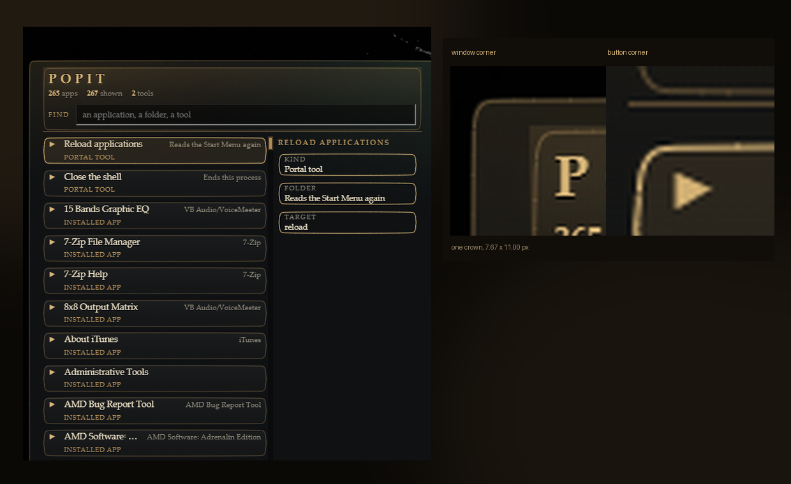

The machine
Debian 13 runs CUA v2.7.3 on linux
Debian 13 reading
This machine scores the repository 10 in band red

Debian 13 runs CUA v2.7.3 on linux
6 stars run from presence to continuity
The gate runs 15 checks, first is family-look-pinned
| Corner, every surface | 7.67 by 11.00 px |
| Clip pad | 0.5 px |
| Frame pad | 1.5 px |
| Stroke | 1 px |
| Strip height | 48 px |
| Profile | 8 cubics |
| Surfaces | 4 draw the one corner |
| Machine | Debian 13 CUA v2.7.3 |
| Gate checks | 15 named |
| Stars and axes | 6 over 9 |
| Machine score | 10 in band red |
The reading is 040294620a87 over three routes
PySide6>=6.8 python shell.py
Windows 10 or 11 with Python 3.13